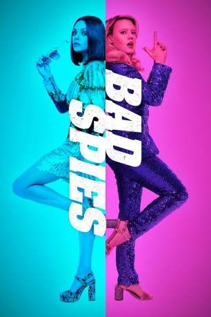

gesehen am 07.01.2019
gesehen am 07.01.2019Alternativ: The Spy Who Dumped Me (Englischer Titel) gesehen am 07.01.2019
 
 IMDB-Wertung: 6.0 / 10
IMDB-Wertung: 6.0 / 10  Metascore:
Metascore: 
Die neurotische Audrey fällt eines Tages aus allen Wolken, als sie herausfindet, dass ihr vermeintlich so langweiliger Ex-Freund Drew die ganze Zeit ein internationaler Spitzenspion war. Als ihr ein USB-Stick mit gefährlichen Daten in die Hände fällt und sie zusammen mit ihrer besten Freundin, der chaotischen Morgan, einen Mordanschlag auf ihren Verflossenen beobachtet, macht sie sich aus dem Staub und flüchtet aus Amerika. Es beginnt eine wilde Jagd durch die Hauptstädte Europas, bei der den beiden Freundinnen, nicht nur die CIA, sondern auch osteuropäische Killer sowie ein mysteriöser britischer Geheimagent namens Sebastian auf den Fersen sind. Dabei stellt sich schnell heraus, dass Audrey und Morgan nicht unbedingt das Zeug zum Agenten haben...
Jahr: 2018
Dauer: 117 Minuten
FSK: 16
Land: USA Studio: LionsgateTonspuren: DD5.1 - ,
Untertitel: Deutsch,
Auflösung: 1080p (1920x800) Größe: 8151 MB
Genre: Action, Komödie, Abenteuer
Regisseur: Susanna Fogel
Drehbuch: Susanna Fogel, David Iserson
Soundtrack: Tyler Bates
Darsteller:
 Justin Theroux als Drew
Justin Theroux als Drew Mila Kunis als Audrey
Mila Kunis als Audrey Kate McKinnon als Morgan
Kate McKinnon als Morgan Dustin Demri-Burns als Viktor
Dustin Demri-Burns als Viktor Peter Schueller als TSA Agent
Peter Schueller als TSA Agent Mirjam Novak als Verne
Mirjam Novak als Verne Gillian Anderson als Wendy
Gillian Anderson als Wendy Jane Curtin als Carol
Jane Curtin als Carol Paul Reiser als Arnie
Paul Reiser als Arnie Fred Melamed als Roger
Fred Melamed als Roger James Fleet als Tom
James Fleet als Tom Justine Wachsberger als French Girl
Justine Wachsberger als French Girl Roderick Hill als Hairy Man
Roderick Hill als Hairy Man Ólafur Darri Ólafsson als Finnish Backpacker
Ólafur Darri Ólafsson als Finnish Backpacker Gyula Mesterházy als Canadian Ambassador
Gyula Mesterházy als Canadian Ambassador Attila C. Arpa als Security Guard
Attila C. Arpa als Security Guard Hélène Cardona als French Student (uncredited)
Hélène Cardona als French Student (uncredited) Kornelia Horvath als Gala Audience (uncredited)
Kornelia Horvath als Gala Audience (uncredited)Datei: X:\2018(A-F)\Bad Spies (2018, FSK16, 1920x800).mkv seit 25.12.2018
Festplatte: HD 2017(A-Z)-2018(A-F)
 Es gibt insgesamt 151 Filme in der Gruppe '2018(A-F)'
Es gibt insgesamt 151 Filme in der Gruppe '2018(A-F)'